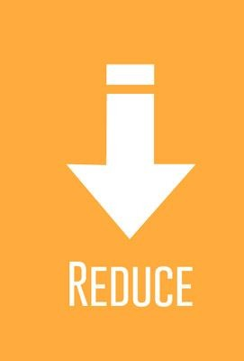
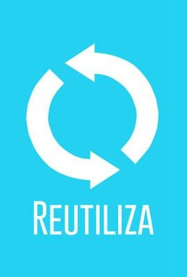
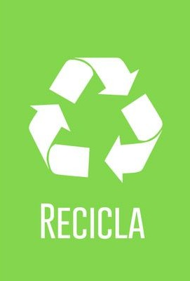
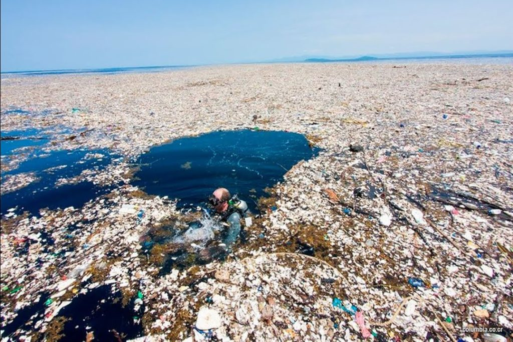

Para comenzar propondremos la actividad de las 3R (reducir, reutilizar, reciclar) en nuestra vida cotidiana en cuanto a los plásticos que usamos, esto quiere decir que primero debemos usar la menor cantidad de plástico cómo puede ser en el caso de las bolsas de plástico o en el caso de las botellas.
La siguiente hace referencia a que si usamos estas bolsas, botellas, vasos. que debemos utilizarlos, no generar más, ya que estos ni en dos vidas humanas llegan a degradarse por completo y esto despúes es un peligro para el ecosistema ya que lo daña por generar en gran masa estos residuos
La última hace referencia a que reciclemos todo el plástico acumulado en nuestros hogares, para que pueda ser reutilizado más tarde por alguien más. No deja de ser un proceso de transformación para que se pueda volver a utilizar esté material.
Esta actividad se basa en la recogida de plásticos, principalmente en las playas, dónde se aloja la mayor parte del plástico. La recolección de haría con las manos y nuestros voluntarios se equiparían con guantes biodegradables y guardarían la basura en bolsas también hechas con plástico hecho con el mismo plástico que se encuentran, cumpliendo así con las 3R’s anteriormente dicha.
Estas islas de gran tamaño y densidad se van formando a medida que vamos tirando los desperdicios plásticos al agua, sobre todo los que vienen de los desagües. hemos puesto en circulación 8.300 millones de toneladas de este polímero a nivel global, según estima la Universidad de California, y lo más preocupante es que más del 70% son ahora residuos que colapsan los vertederos y los mares del planeta.
Aqui encontrarás todas las actividades, y sus respectivos horarios junto con un formulario de inscripción.